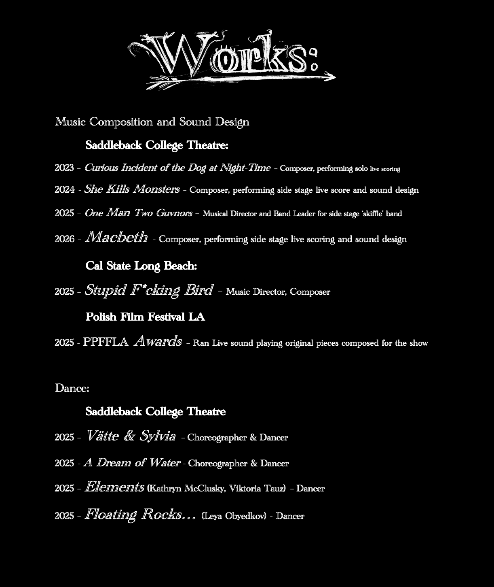

Wyatt Davis is a Multi-disciplinary artist based in South OC.
He has worked in Theater, organized DIY shows, sold drawings and paintings,
had commissions for album art, serenaded people on hiking trails, and played music to the northern lights.
He is currently focusing on his songwriting, and composing for Saddleback College Theatre Dept.
